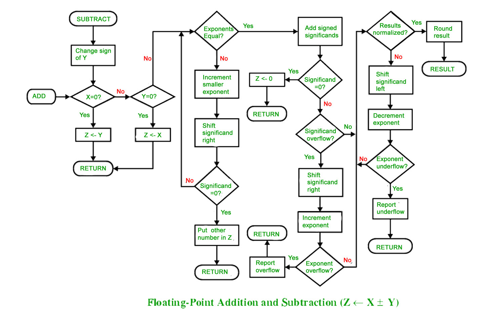

FLOATING POINT ADDITION AND SUBTRACTION
- FLOATING POINT ADDITION
To understand floating point addition, first we see addition of real numbers in decimal as same logic is applied in both cases.
For example, we have to add 1.1 * 103 and 50.
We cannot add these numbers directly. First, we need to align the exponent and then, we can add significand.
After aligning exponent, we get 50 = 0.05 * 103
Now adding significand, 0.05 + 1.1 = 1.15
So, finally we get (1.1 * 103 + 50) = 1.15 * 103
Here, notice that we shifted 50 and made it 0.05 to add these numbers.
Now let us take example of floating point number addition
We follow these steps to add two numbers:
1. Align the significand
2. Add the significands
3. Normalize the result
Let the two numbers be
x = 9.75
y = 0.5625
Converting them into 32-bit floating point representation,
9.75’s representation in 32-bit format = 0 10000010 00111000000000000000000
0.5625’s representation in 32-bit format = 0 01111110 00100000000000000000000
Now we get the difference of exponents to know how much shifting is required.
(10000010 – 01111110)2 = (4)10
Now, we shift the mantissa of lesser number right side by 4 units.
Mantissa of 0.5625 = 1.00100000000000000000000
(note that 1 before decimal point is understood in 32-bit representation)
Shifting right by 4 units, we get 0.00010010000000000000000
Mantissa of 9.75 = 1. 00111000000000000000000
Adding mantissa of both
0. 00010010000000000000000
+ 1. 00111000000000000000000
————————————————-
1. 01001010000000000000000
In final answer, we take exponent of bigger number
So, final answer consist of :
Sign bit = 0
Exponent of bigger number = 10000010
Mantissa = 01001010000000000000000
32 bit representation of answer = x + y = 0 10000010 01001010000000000000000
- FLOATING POINT SUBTRACTION
Subtraction is similar to addition with some differences like we subtract mantissa unlike addition and in sign bit we put the sign of greater number.
Let the two numbers be
x = 9.75
y = – 0.5625
Converting them into 32-bit floating point representation
9.75’s representation in 32-bit format = 0 10000010 00111000000000000000000
– 0.5625’s representation in 32-bit format = 1 01111110 00100000000000000000000
Now, we find the difference of exponents to know how much shifting is required.
(10000010 – 01111110)2 = (4)10
Now, we shift the mantissa of lesser number right side by 4 units.
Mantissa of – 0.5625 = 1.00100000000000000000000
(note that 1 before decimal point is understood in 32-bit representation)
Shifting right by 4 units, 0.00010010000000000000000
Mantissa of 9.75= 1. 00111000000000000000000
Subtracting mantissa of both
0. 00010010000000000000000
– 1. 00111000000000000000000
————————————————
1. 00100110000000000000000
Sign bit of bigger number = 0
So, finally the answer = x – y = 0 10000010 00100110000000000000000

{kind=link}